KM07 — Ghadi aur Time kaise padhein, ekdum aasaan?
Slide 1Namaste बच्चों! Katixo KhojLab me तुम्हारा फिर से स्वागत है! आज हम सीखेंगे एक बहुत काम की चीज़: ghadi यानी clock कैसे पढ़ें aur time कैसे बताएं. सोचो स्कूल कब लगता है, खेल कब शुरू होता है, खाना कब खाते हो, सब time से चलता है! अगर तुम ghadi पढ़ना सीख गए तो तुम कभी late नहीं होगे. डरने की कोई बात नहीं, ये बहुत आसान है. तो तैयार हो जाओ, चलो शुरू करते हैं!
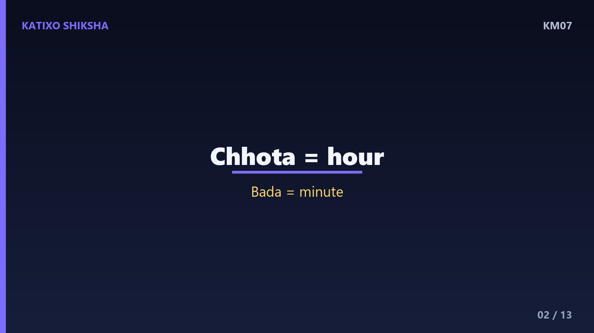
Slide 2सबसे पहले ghadi को देखो. एक clock पर 1 से 12 तक के numbers होते हैं, गोल घेरे में. और दो काँटे होते हैं, यानी दो hands. एक छोटा काँटा aur एक बड़ा काँटा. छोटा काँटा बताता है hour यानी घंटा. बड़ा काँटा बताता है minute यानी मिनट. याद रखो बच्चों, छोटा hour के लिए, बड़ा minute के लिए! बस इतना ध्यान रखोगे तो आधा काम तो यहीं हो गया. चलो आगे बढ़ते हैं!
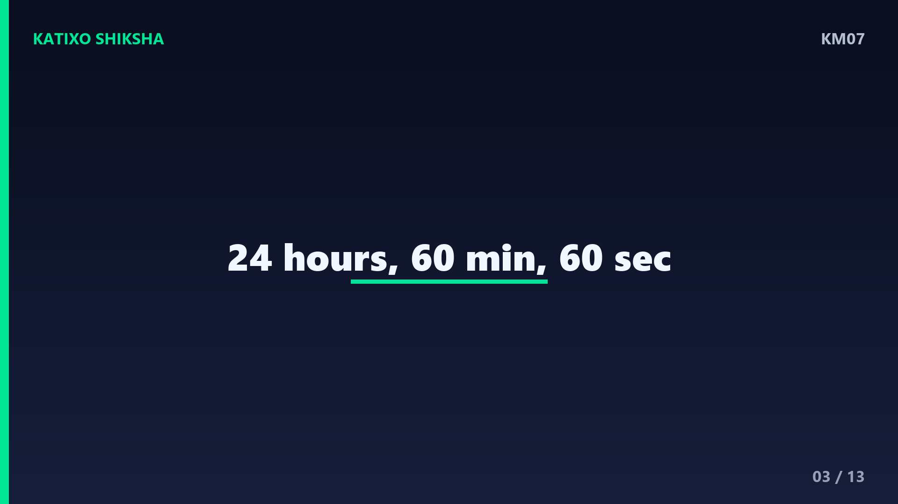
Slide 3अब जानते हैं time की counting. एक पूरे दिन में 24 hours होते हैं. एक hour में 60 minutes होते हैं. aur एक minute में 60 seconds होते हैं. ghadi पर 1 से 12 तक numbers दिखते हैं, पर हर number दो काम करता है. छोटे काँटे के लिए वो hour बताता है, और बड़े काँटे के लिए वो minute का हिसाब देता है. एक number से दूसरे number तक बड़ा काँटा 5 minutes लेता है. यह 5 का जादू बहुत काम आएगा, याद रखना!
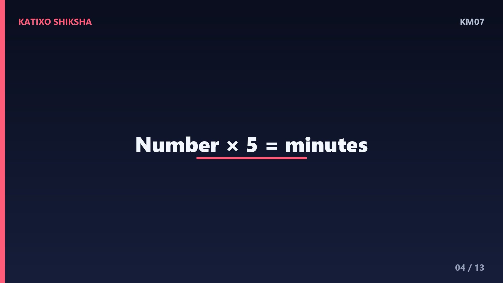
Slide 4अब समझो minute का हिसाब, क्योंकि ये सबसे ज़रूरी है. बड़ा काँटा जब 12 पर हो तो 0 minutes, यानी पूरा घंटा. जब 1 पर पहुँचे तो 5 minutes, 2 पर हो तो 10 minutes, 3 पर हो तो 15 minutes. देखा बच्चों? हर number को 5 से गुणा करो और minutes मिल जाएँगे! जैसे 6 पर बड़ा काँटा हो तो 6 गुणा 5 बराबर 30 minutes. यह 5 की table यहाँ बहुत काम आती है, इसलिए उसे पक्का याद रखो!
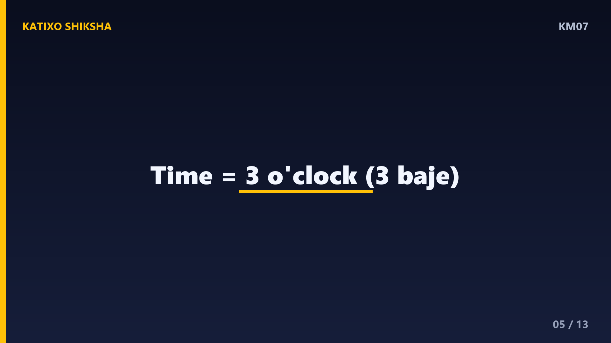
Slide 5चलो एक worked example करते हैं. मान लो छोटा काँटा 3 के पास है aur बड़ा काँटा 12 पर है. छोटा काँटा hour बता रहा है, यानी 3 बजे. बड़ा काँटा 12 पर है, यानी 0 minutes. तो time है 3 बजकर 0 minute, यानी ठीक 3 o'clock! जब भी बड़ा काँटा 12 पर हो, समझ जाओ पूरा घंटा हुआ है, कोई minute नहीं बचा. कितना आसान था ना बच्चों? चलो एक और देखते हैं!
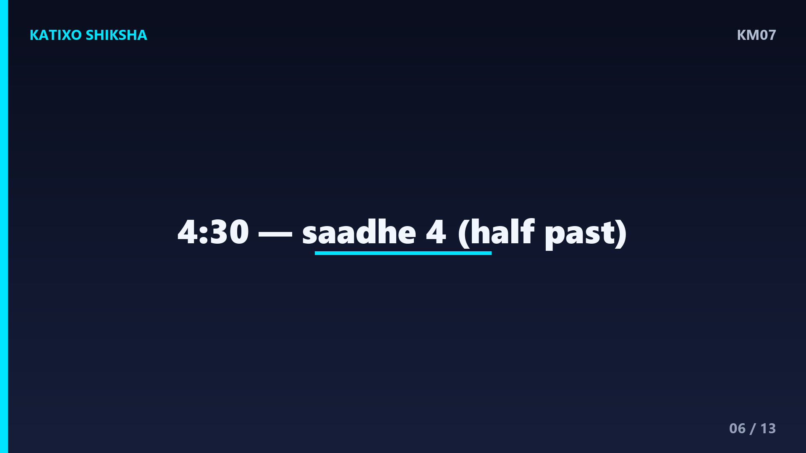
Slide 6अब दूसरा example. छोटा काँटा 4 aur 5 के बीच है, aur बड़ा काँटा 6 पर है. छोटा काँटा अभी 4 पार कर चुका है पर 5 तक नहीं पहुँचा, तो hour है 4. बड़ा काँटा 6 पर है, तो 6 गुणा 5 बराबर 30 minutes. तो time है 4 बजकर 30 minutes, यानी साढ़े 4! जब बड़ा काँटा ठीक 6 पर हो तो हमेशा आधा घंटा यानी 30 minutes होता है. इसे half past भी कहते हैं, बच्चों!
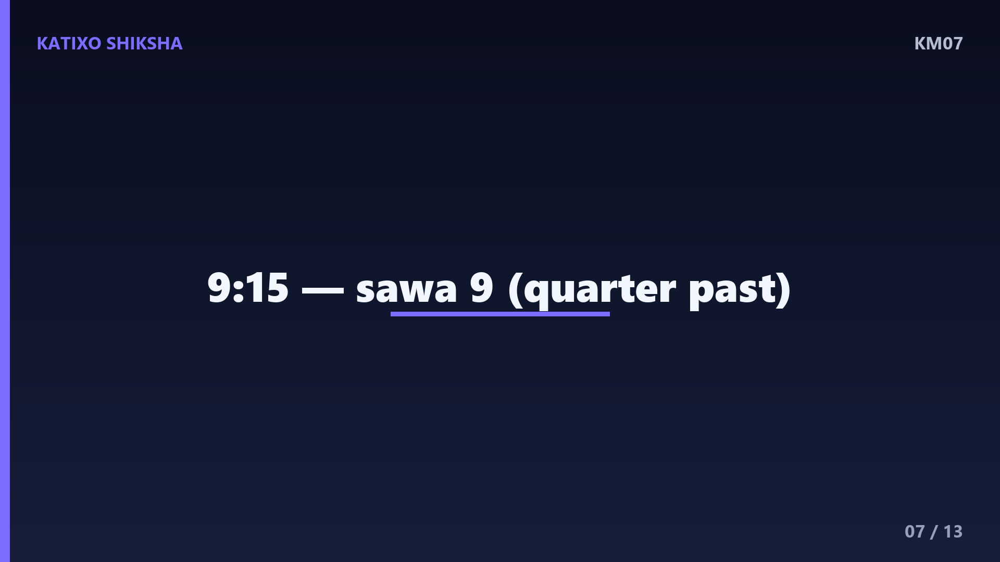
Slide 7अब एक और example, थोड़ा aur मज़ेदार. छोटा काँटा 9 के पास है aur बड़ा काँटा 3 पर है. छोटा काँटा 9 पार कर रहा है, तो hour है 9. बड़ा काँटा 3 पर है, तो 3 गुणा 5 बराबर 15 minutes. तो time है 9 बजकर 15 minutes, यानी सवा 9! जब बड़ा काँटा 3 पर हो तो हमेशा 15 minutes यानी एक चौथाई घंटा होता है, इसे quarter past कहते हैं. देखो बच्चों, 5 की table से सब आसान हो गया!
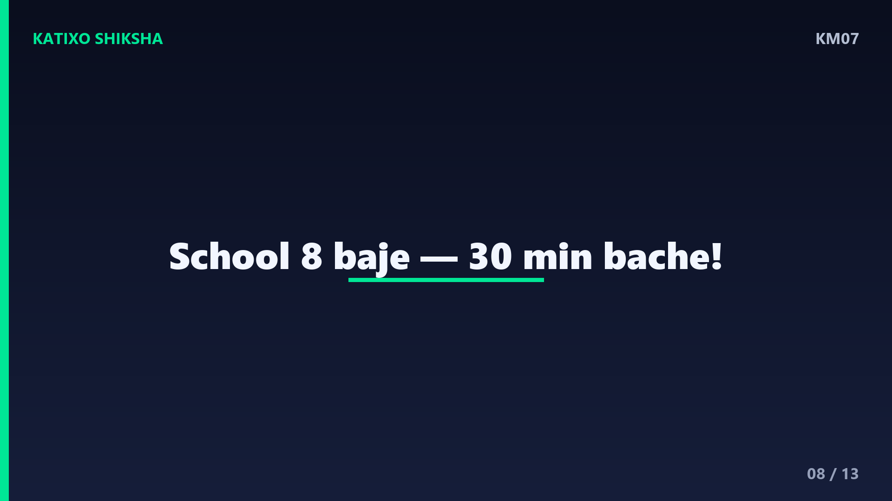
Slide 8अब एक मज़ेदार रोज़ की कहानी. सोचो तुम्हारा स्कूल 8 बजे लगता है. तुम 7 बजकर 30 minutes पर उठते हो. तो स्कूल लगने में कितना समय बचा? 7 बजकर 30 से 8 बजे तक 30 minutes हैं, यानी आधा घंटा! इतने में तुम तैयार हो जाओ. ऐसे ही अगर खेल 5 बजे शुरू होता है aur अभी 4 बजकर 45 हुए हैं, तो बस 15 minutes बाकी हैं. ghadi पढ़ना सीखकर तुम अपना पूरा दिन plan कर सकते हो!
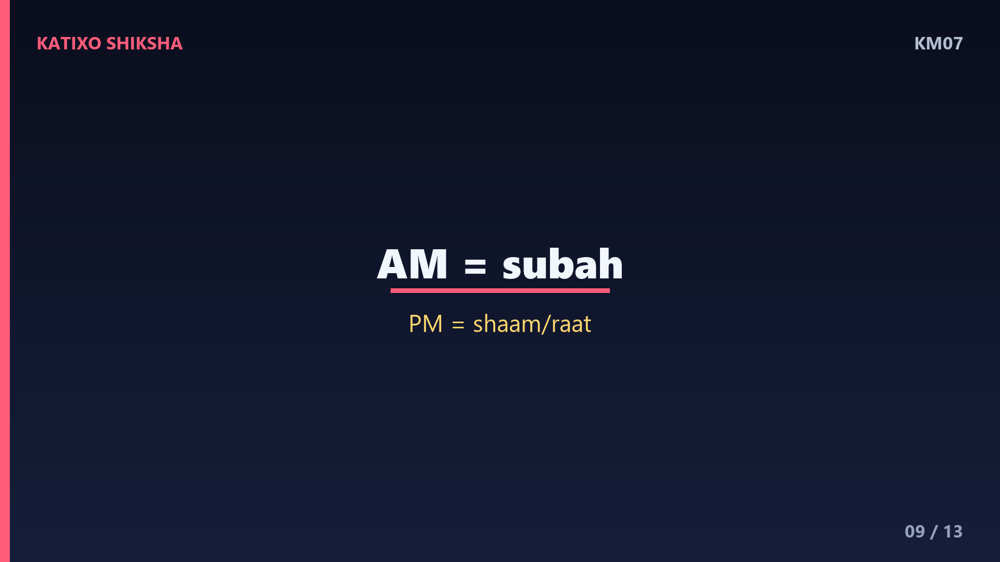
Slide 9अब AM aur PM समझो, ये बहुत ज़रूरी है. सुबह 12 बजे से दोपहर 12 बजे तक के time को AM कहते हैं. जैसे सुबह का नाश्ता 8 AM पर. दोपहर 12 बजे से रात 12 बजे तक के time को PM कहते हैं. जैसे रात का खाना 8 PM पर. तो याद रखो बच्चों, सुबह वाला AM aur दोपहर के बाद वाला PM. एक ही number, जैसे 8, दिन में दो बार आता है, इसलिए AM aur PM बताना ज़रूरी है!
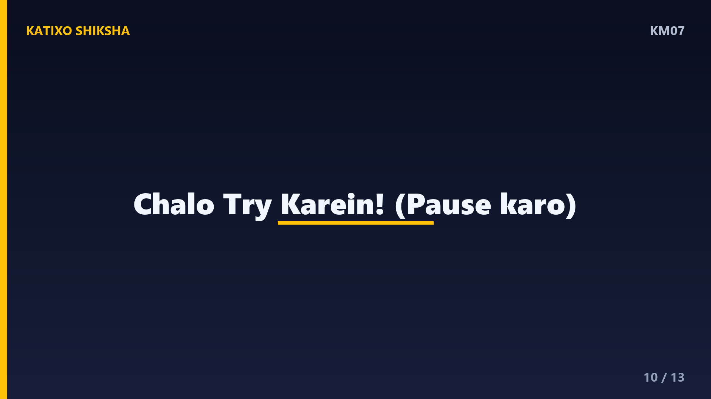
Slide 10अब समय है तुम्हारी बारी! Chalo try karein! तीन सवाल हैं, video रोको aur copy me हल करो. पहला: छोटा काँटा 2 पर aur बड़ा काँटा 12 पर है, time kya hai? दूसरा: बड़ा काँटा 6 पर हो तो कितने minutes होते हैं? तीसरा: सुबह के नाश्ते का time 8 बजे है, ये AM होगा या PM? ध्यान से सोचना, जल्दबाज़ी मत करना. हो गया? शाबाश! अब अगली slide पर answers देखते हैं!
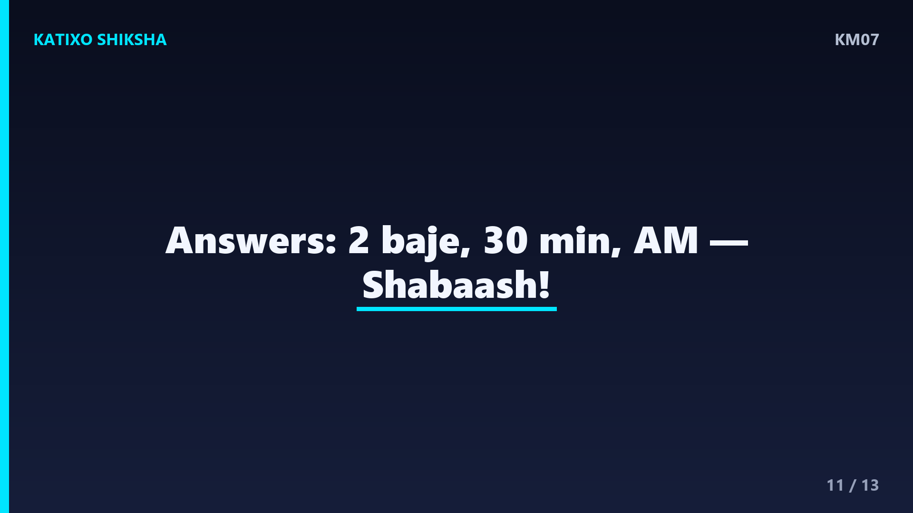
Slide 11चलो answers मिलाते हैं! पहला: छोटा काँटा 2 पर, बड़ा काँटा 12 पर, यानी 0 minutes, तो time है ठीक 2 o'clock, यानी 2 बजे! दूसरा: बड़ा काँटा 6 पर हो तो 6 गुणा 5 बराबर 30 minutes! तीसरा: सुबह के नाश्ते का 8 बजे होता है AM, क्योंकि वो सुबह का समय है! कितने सही हुए बच्चों? अगर सब सही तो शाबाश, और कोई गलत हुआ तो फिर से कोशिश करो, practice से सब आता है!
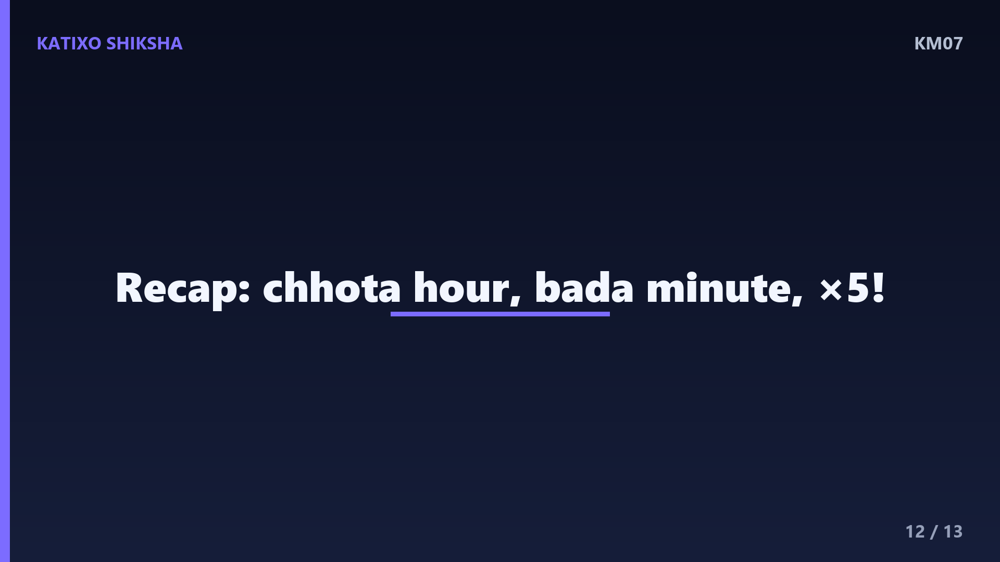
Slide 12चलो अब पूरा recap करते हैं! ghadi पर छोटा काँटा hour बताता है aur बड़ा काँटा minute. बड़े काँटे का number 5 से गुणा करो तो minutes मिल जाते हैं. 12 पर मतलब पूरा घंटा, 3 पर मतलब सवा यानी 15 minutes, 6 पर मतलब साढ़े यानी 30 minutes, aur 9 पर मतलब पौने से पहले यानी 45 minutes. सुबह का समय AM, दोपहर के बाद PM. बस इतना याद रखो aur तुम time के master बन जाओगे!
Slide 13शाबाश बच्चों! आज तुमने ghadi पढ़ना aur time बताना सीख लिया, ekdum aasaan tarike se! अब रोज़ घर की ghadi देखकर time पढ़ने की practice करना, फिर ये बिल्कुल आसान लगेगा. अगर मज़ा आया तो Katixo KhojLab subscribe karo, like करो aur bell दबाओ ताकि हर नया मज़ेदार lesson सबसे पहले तुम तक पहुँचे! अगली बार एक नए topic के साथ मिलेंगे. तब तक सीखते रहो, मुस्कुराते रहो. Shabaash, milte hain agle episode me!